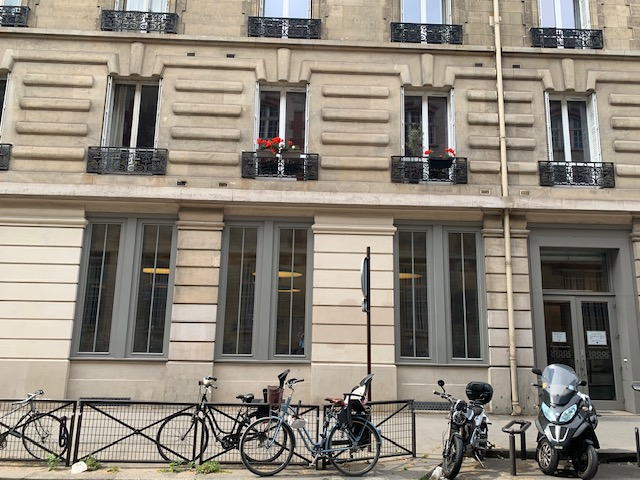
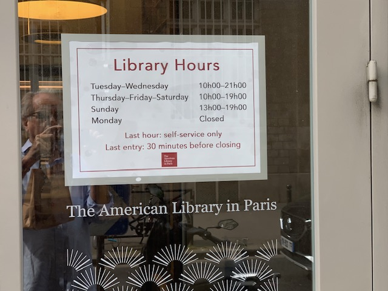
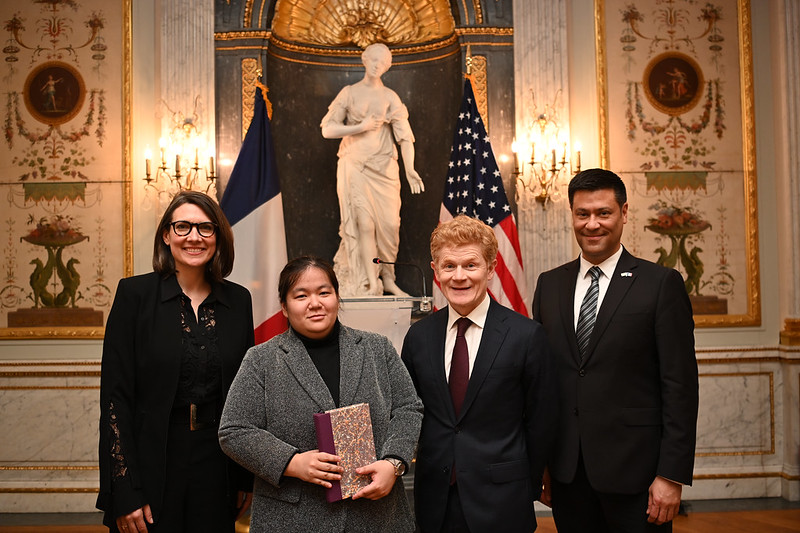
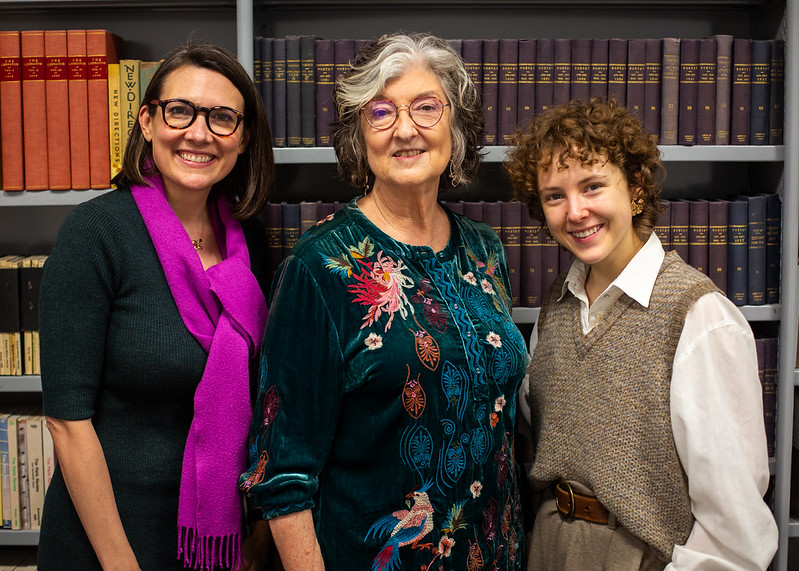
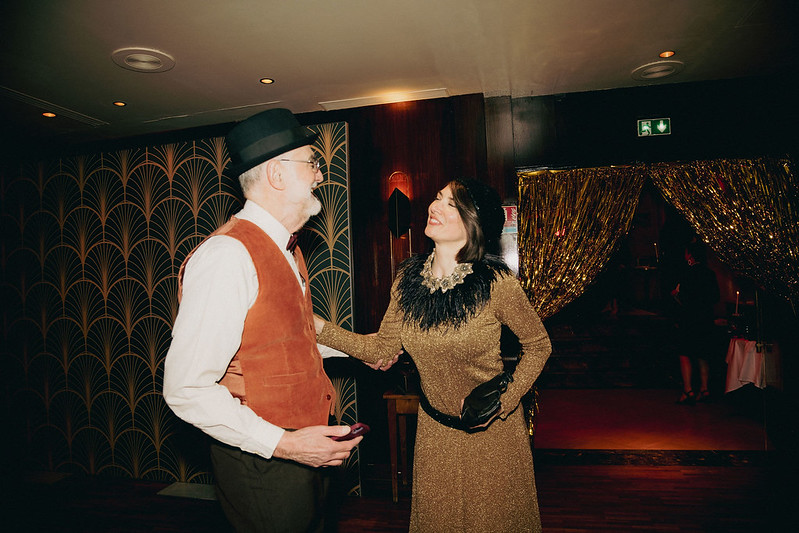
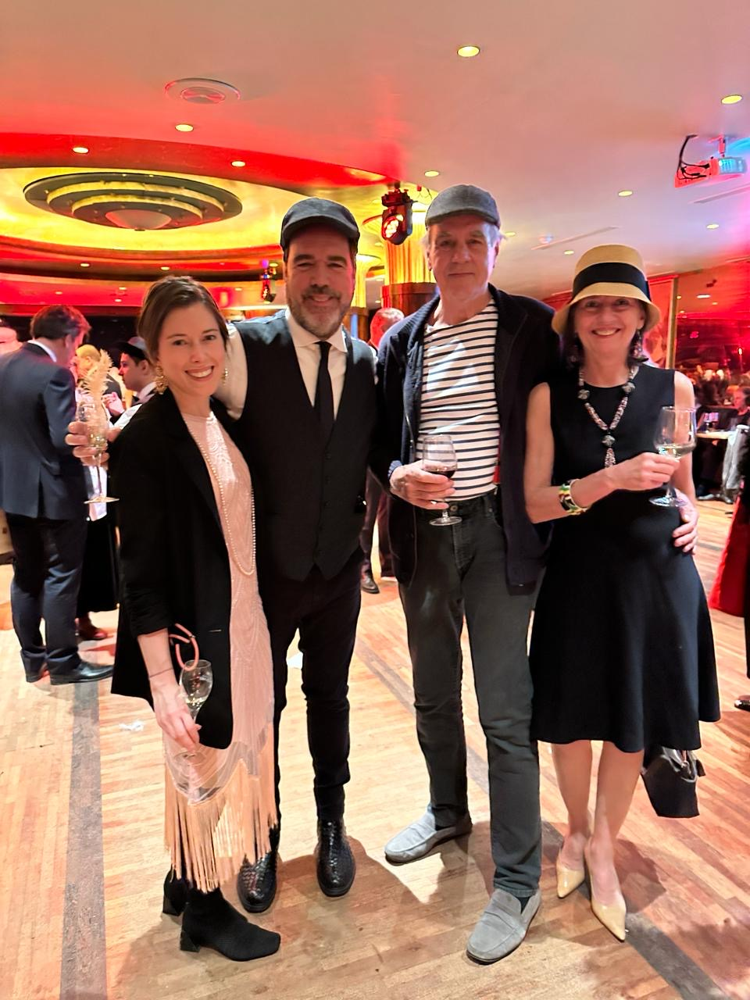
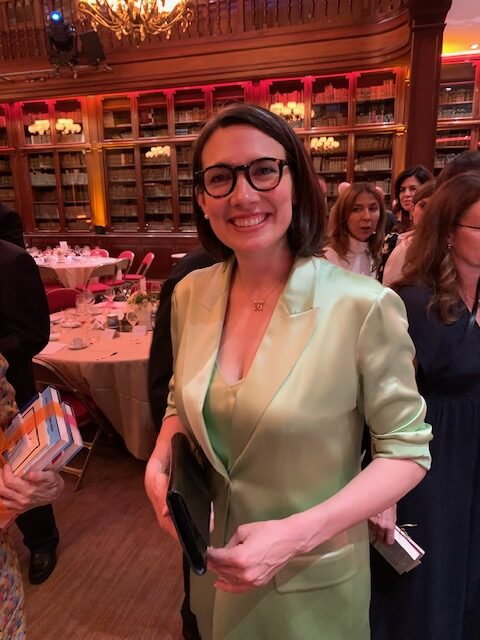
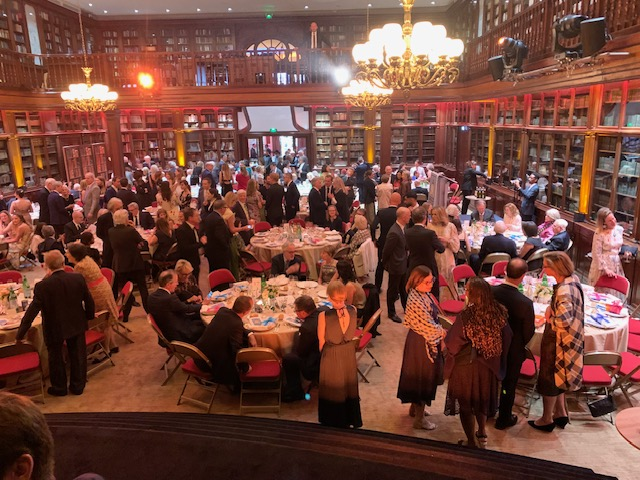

Paris is the most visited city in the world. You most likely have visited Paris at some point. Perhaps you stayed for a few days to a week or more. There is so much to do in this rich and vibrant city, that it’s impossible to really grasp the Parisian experience in such a short time. It also leads to many of the cliches we hear about Paris and its citizens. If you really want to know Paris, consider working there like former Chicagoan, Audrey Chapuis, Executive Director of the American Library in Paris. First, I have a few facts to share about the Chicago/Paris connection.

Paris is Chicago’s “Sister City”. The relationship goes back to 1996 after a visit to Chicago by former Paris mayor, then President of France, Jacques Chirac, who proposed to Chicago Mayor Richard M. Daley that Chicago and Paris enter into a sister cities agreement. While in Chicago, the Paris Committee hosted a benefit dinner at Bistro 110 featuring renowned Chef Joel Robuchon, who was a guest chef for one week at the restaurant which was celebrating its 10th year anniversary. I was fortunate enough to attend one of those incredible evenings co-hosted by international food critic, Patricia Wells; up until that time, it was the best meal I ever had in my life. The Committee set an agenda that included city planning, increasing French participation in the Chicago Marathon, the Chicago Jazz festival, economic development, fashion, arts and culture. The relationship continues to this day.
It turns out, there are over 15,000 Americans living in Paris, and that doesn’t include “unregistered” persons like me, who stay less than 90 days per year or who don’t bother to register. Not every American living in Paris is actually working, but many of them do, which brings them even closer to the true Parisian experience: renting or buying a flat, getting health insurance, receiving necessary healthcare, working at a job, getting paid, paying French taxes, opening a bank account, interacting with Parisians every single day.

After living on and off in Paris for the past 20 years, I actually didn’t meet another American for the first 15 years, and that only occurred because I became a member of the American Library in Paris, an incredible institution which houses the largest collection of English literature outside of an Anglophone country. It was at the American Library, that I met my guest today, Audrey Chapuis. In our first conversation, she was so happy to be speaking to another Chicagoan! And not only from Chicago, but a former librarian at Northwestern University. Audrey had worked for close to a decade at the Pritzker Law Library and has many fond memories of living and working there. We have become great friends and sat down to talk about her life, living in Chicago and working at Northwestern, then leaving the U.S. to build a successful career in Paris.

Audrey Chapuis has been obsessed with two things since childhood: books and France. These interests have led her to an incredible career that took root in Chicago and has now flourished in France. The American Library is a vital part of the American community in Paris and brings many expats with Chicago connections together. In this interview we talk about her career and life as an American in Paris.
Rob: You and I met in Paris several years back, but we have some other important places in common, Chicago and Northwestern University. I’ve worked at Northwestern University my entire professional career, and you spent eight years at the Pritzker Legal Research Center at Northwestern University School of Law. What did you enjoy about living in Chicago and working at Northwestern University?
Audrey: I’ve been in Paris almost a decade, but my heart still remains, at least partially, in Chicago where I return every year. Chicago is the city that I first chose to live as an adult. So, the ties and bonds remain very strong. I never really left it behind. Like you, it was such an important chapter of my professional career. I remain in close contact with my colleagues at Northwestern. As you know, Midwesterners typically are supportive, kind and open-hearted. I just had a fantastic experience all around living and working in Chicago.
Rob: I agree completely. I grew up in Boston but am a Midwesterner at heart and will never move back East. Chicago and Paris are Sister Cities. Can you tell me, in your experience, the similarities and differences between Paris and Chicago? Why is there such a link?

Audrey: I’m involved with the Comité Paris-Chicago (Committee for Paris-Chicago). So, we’re looking for even more links between the two cities. I would say, more generally, both cities have spectacular urban cityscapes, so moving through these two cities is just sheer joy. They are the nexus of art, science, industry, and education. Both are global centerpieces where all of these disciplines come together to create something much greater than the sum of their parts. As I walk through each city, both give me so much energy. They’re both developing cities, but at the same time they’re historically rooted. You have the center of the city, that tourists might know, with the iconic cityscapes, and then outside the center is this burgeoning environment where there’s even more multiculturalism and an exciting art scene. I see parallels in that. A big plus is that both are super inspiring from an art, literature and gastronomic perspective. Additionally, they’re both walkable cities, the idea of the “15 minute” city, I think that’s where you can really create an affirming civic life.
Rob: You grew up in Austin, Texas, but no one from your childhood days is surprised to hear that you now live in France and lead the American Library in Paris. Can you tell me about your childhood obsession with books and all things French?
Audrey: The French piece really, truly, no one knows where that came from. Maybe on a television show somewhere? I started counting in French and that led to an obsession with the French language. Actually, my high school French teacher in Texas was from Chicago, so there was an early serendipity there. Growing up, France represented an artistic community, and I thought in the imagination, there was nothing more beautiful and profound and inspiring than a group of artists being able to share their ideas among beautiful monuments and cityscape. I was definitely influenced by Henry Miller and Anaïs Nin and their whole set. On the book side, it was very acquisitive. I loved books as objects and loved them as escapes. Everything around the world of books I knew that I wanted to be involved. When I first heard you could get a master’s in library science, I thought, yes, that’s the thing. It was never really about publishing, but when I realized I could do something to support access to books, that felt like a calling.
Rob: You moved to Paris in 2014 with your husband, Patrick Chapuis, who is President of Canon France, and you joined the American Library in Paris where you have risen through the ranks to executive director. You’ve described this part of your life romantically, not only because you moved to Paris along with your husband, but because you have said the experience of working here reignited, perhaps, a dormant, youthful idealism. Could you describe what you mean by that?

Audrey: Paris is a place where people project a lot of fantasy, and sometimes that is just a passing fancy which we indulge by a week abroad. Even with a short visit, the city definitely delivers in its beauty, mythology, and its layers of history. History is so evident on every single street, you feel like you’re walking through the 18th and 19th centuries. It is a place of fantasy and definitely connected to my early dreams about this artistic colony. Living here, surpassed that youthful idealism to something that’s more profound, real, and authentic. As you personally know, being part of the library community, it is truly a nexus of creatives, thinkers, and curious people. Because many of us are drawn to Paris as a site of artistic inquiry, we tend to be like-minded, even if we’re from very different corners of the world, different backgrounds and different disciplines but we share that commonality. For those of us living here or just passing through, it delivers on multiple fronts.
Rob: Many Americans I run into ask: why is there an American Library in Paris? Can you describe the American Library in Paris, its history and how it has grown to be the largest English language lending library on the European continent and maybe outside of an English-speaking country?
Audrey: Yes, the story of the library is remarkable and it’s worth diving into. I encourage everyone, if you’re in Paris, we have a history tour with a docent who goes into all the juicy details. It’s a fantastic story of philanthropy and librarian ingenuity. At the end of the First World War, there was a massive book drive that was coordinated mostly by the American Library Association and the Library of Congress, to ship millions of books to service people serving abroad. It was meant to be temporary, but it became, during the war, a lending library to all. French school teachers and international business people were utilizing it along with the large American ex-pat community. When it was time to pack up and close the doors as originally planned, there was so much local support, that the library and community leadership said, if we can prove to the powers that be that we can sustain this library, can we create a permanent American Library in Paris? It turns out, there was enough local support. The American Library Association (ALA) let us incorporate, and we still have an ALA Representative on our board continuously. So, those links are still alive. Since then, it has grown and we definitely remain a robust lending library. The number of traditional library books being circulated continues to increase, but we are also a cultural center. In the 1930s we started to do author talks and that picked up considerably in the last twenty years with incredible support from GRoW @ Annenberg. Now we have hundreds of programs throughout the year for cultural events, with authors and other speakers as well for readers and those who are curious of all ages. I include you Rob for your virtual presentation on the status of the Covid-19 pandemic in 2021! We now have 5,000+ members and approximately 10,000 audience participants.
We’re doing a lot with social outreach as well. We did a big pop-up library tour called “On the Road” that was supported by the U. S. Embassy. We went beyond the walls of our institution and outside the 7th arrondissement, our neighborhood, to reach new communities in Ile de France and Haute de France. The library is more than just a lending library, it really is a community and cultural anchor. We are American, but open to everyone and that’s important. A lot of people wonder: do I need to be American to participate? Absolutely not! You don’t even need to speak English. There are aspiring Anglophones who are members that come from over 100 countries, so we are extremely international, welcoming, and inclusive. It’s also located in central Paris, which people appreciate.

Rob: At some of the events that I’ve attended, I was really surprised how many non-Americans were there.
Audrey: Yes, because you can just walk in the door. And I think because we strive to be very warm and welcoming, people quickly feel like this space belongs to, to them. English, for better or worse, has become the language for science, technology, and business. The imperative to learn English is ever greater and continues to grow. The Library is an immersive English environment in the middle of Paris, which is a wonderful oddity.
Rob: And in my neighborhood, which I really love!
Audrey: You’re a block away!
Rob: You can’t be at work 24 hours a day, although some people try, but that’s not the Parisian way of doing things. What does Audrey Chapuis do in her non-library time?

Audrey: I’d say, I’m probably more American than French when it comes to work. Work is definitely an extension of my identity and I think for a lot of people who work in nonprofits, when you’re working toward a mission, it really doesn’t feel like work. It can be all-consuming and you can give more to it because it feels much, much greater than any of us. I’m never really outside of work. But if I was to try to delineate some non-work activities it would be sketching. I enjoy urban sketching. Paris is the place for it. I do watercolor sketching and I also do graphic recording – that is doing live recording and drawing things that are happening simultaneously. That’s my hobby. I also support other related institutions such as being on the board of the Marymount International School, that’s something that I’m passionate about as well, furthering their educational mission. As mentioned, I’m involved with the Comité Paris-Chicago and also News Decoder which is another educational outfit that is all about information literacy, a global initiative. There’s work and then there’s then there’s side work, but it’s all for increased access to information, boosting media literacy, and positive educational experiences.
Rob: Since you moved to Paris, can you describe one of your most “memorable experiences”?
Audrey: My thoughts first go to visiting the bookshop Librairie Galignani on the rue de Rivoli during the holiday season. There’s a specific smell there that’s lovely, luscious, vanillin smell of books, plus the pine bookshelves themselves. I think they have some sort of pine scented candle burning somewhere, but it just adds to the romance of a Parisian bookshop. It doesn’t get any better than that. Also, it’s a stone’s throw away from the Louvre and the Tuileries, and it’s just a very, special, magical place.

Rob: Can you give the readers three top places that they should visit when they come to Paris?
Audrey: I will cheat and do four because number one is the American Library and the history tour!
- American Library in Paris. Visiting Americans have to come see the history tour. They will feel right at home, and will learn a lot.
- Eiffel Tower. We’re a block away from the Eiffel Tower, so they can make their first discovery of the Eiffel Tower which was built in 1889, and at the time, was the world’s tallest man-made structure.
- La Grande Épicerie de Paris. After the tour, they can walk about half an hour to the Grande Épicerie, which is a grocery store that is attached to Le Bon Marché, one of the first department stores in the world. La Grande Épicerie is like Disney World for anyone interested in gastronomy. I could spend days there. You can have tastes of oysters, they have a little foie gras bar. It’s just fantastic. You can pick up all of your food souvenirs there.
- Musée Rodin. In the vicinity is Musée Rodin which was Rodin’s former residence. You can go and actually see the full museum or, for a pence, you can just access the gardens where you can see “The Thinker.” You can just enjoy the gardens, with the dome of the Invalides and the Eiffel Tower in the distance. It’s a very sweet place. Sometimes they host fashion shows of iconic brands. During the day you can go with your sketchbook and commune with Rodin’s masterpieces.
Rob: You can also have lunch there in the garden.
Audrey: Voilà. Perfect.
Rob: So, what advice do you have for any young Francophiles back here in the States, who dream of living and working in Paris someday?
Audrey: I would say, make connections early. Come for a month and volunteer somewhere. If you’re part of a university program, get an internship. We host about three interns at any given time. It’s quite competitive, but I think that goes a long way to creating those ties. It can feel daunting, but at the same time, it’s fun. Especially in anglophone Paris, it can be quite a small town. So, if you know a few key people, they might be able to open some doors for you and help you participate in the life of Paris. Go to events, go to museum exhibitions, come to library events, just come visit. Try to have as many touch points as possible. If you can’t make it to Paris, which I understand that’s not available to everyone, you can still come to Zoom on your lunch break in Chicago and listen to author talks at the American Library in Paris! You can be there on video and be right here in our reading room listening to amazing experts. This season we had Barbara Kingsolver, Pulitzer Prize winner, the iconic Catherine Mackinnon, and amazing academics like Trica Keaton. We have some incredible Visiting Fellows and Writers-in-Residence sponsored by The De Groot Foundation including Stacey Schiff, another Pulitzer Prize winner, Christian Campbell, Adam Schatz, and Patricia Lockwood. We get incredible people here, so this is one way of taking part in Parisian life without having to leave the comfort of your Chicago living room.

Rob: The Library’s social agenda is a lot of fun while at the same time, helping with fundraising. Events include more informal ones such as the 1920’s themed Les Années Folles at La Coupole, held two weeks ago in the dance hall of La Coupole, one of the Lost Generation hang outs in the Montparnasse neighborhood. I was there imaging being with Josephine Baker, Man Ray, Pablo Picasso, Ernest Hemmingway, Simone de Beauvoir and the crowd. I know your biggest fundraising event of the year is the famous Annual Gala of the American Library in Paris, which is held at the Automobile Club de France, or l’Auto. You want to tell us a little more about what’s coming up on June 6th?
Audrey: We’re very excited because we have Maureen Dowd, the New York Times opinion columnist, as our gala honoree this year and she’s an incredible political commentator, so we’ll be honoring her body of work and remarkable career. It’s really a moment of celebration for our community. We get some of our closest writers, friends and supporters together and celebrate literary Paris, support the library, and every year it’s the highlight of the social calendar in Paris. We’ve had some pretty incredible people come as our gala honorees. And of course, the Automobile Club is iconic and the dinner itself takes place in their library, which is an active lending library. Against a backdrop of books, it’s just a lot of fun with great food, friends, and of course you’re supporting the library!
Rob: The Annual Gala is an incredibly beautiful, elegant event. The American ambassador usually comes along with other VIPs in Paris that are working with Americans and with the library. I am looking forward to it! Audrey, thank you so much. It has been incredible to talk to you today and to learn all about you, the library, and your life in Paris. I thank you very much.
Audrey: Thank you, Rob!
Dr. Rob Murphy is Professor and Executive Director of the Havey Institute for Global Health at Northwestern University; he is a physician at Northwestern Medicine. You may have seen him on WGN-TV morning news in recent years, where he gave daily updates on Covid-19 during the height of the pandemic. While he calls Chicago home, Rob also spends time in Paris, where he has lived on and off for the past 20 years including full time as visiting professor at the Pierre et Marie Curie University. He has met many other Chicagoans who are living and working in the city. In this series of interviews, Rob will introduce us to some of these Chicagoans who are embracing a new culture and lifestyle in the City of Lights.